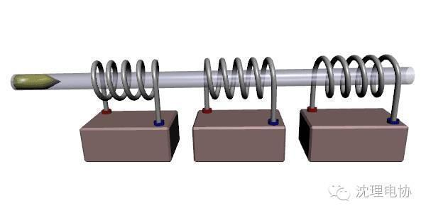
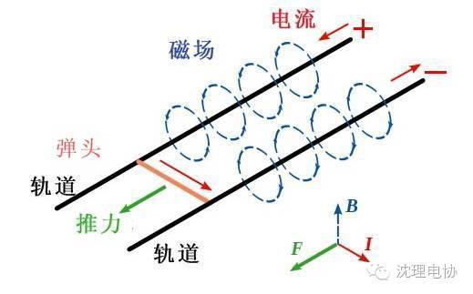
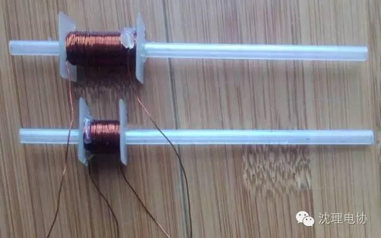
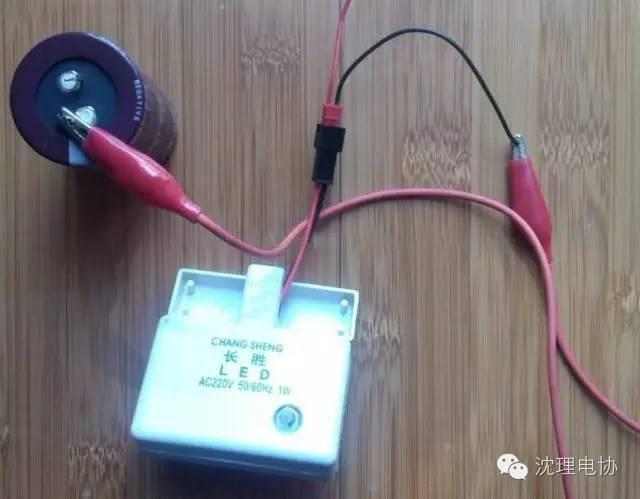
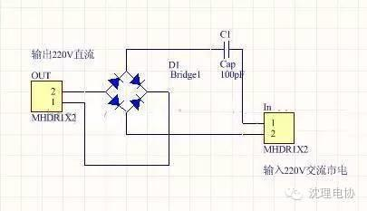
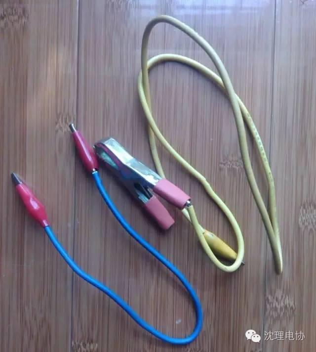
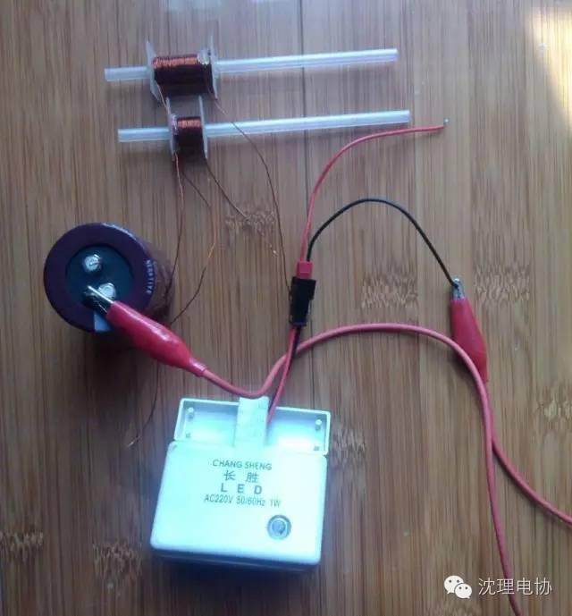

使用小程序
电磁炮的原理非常简单，19世纪，英国科学家法拉第发现，位于磁场中的导线在通电时会受到一个力的推动，同时，如果让导线在磁场中作切割磁力线的运动，导线上也会产生电流。这就是著名的法拉第电磁感应定律。






把电容一端先和线圈一端直接连上，再用粗夹子夹好线圈另一端，然后直接用另一端触碰电容另一端，注意勿触摸裸线!炮管里记得放个小铁钉或笔芯头，然后随着夹子触到电容另一端，“啪”一声，并打火花，“子弹”就飞出去了!
这就是最穷的玩法!
